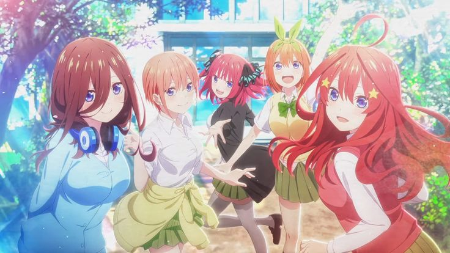

Go-Tōbun no Hanayome (五等分の花嫁), cuyo título se traduce del japonés como "La novia de las cinco partes iguales" o "La novia de las quintillizas", y conocido internacionalmente como The Quintessential Quintuplets, es un manga japonés de género comedia romántica escolar (romcom), escrito e ilustrado por Negi Haruba. La obra fue serializada en la revista Weekly Shōnen Magazine, perteneciente a la editorial Kodansha, desde el 9 de agosto de 2017 hasta el 19 de febrero de 2020, y fue recopilada en un total de 14 volúmenes tankōbon (Haruba, 2017; Haruba, 2020). El título juega con una ambigüedad característica de la obra: las cinco hermanas comparten el mismo rostro genético, pero cada una posee una personalidad, aspiraciones, habilidades y sueños completamente distintos.
Durante su período de publicación, Go-Tōbun no Hanayome se convirtió en la comedia romántica más exitosa en la historia contemporánea de la Weekly Shōnen Magazine, una revista que tradicionalmente había estado dominada por series de acción y combate. La obra superó los veinte millones de copias en circulación a nivel mundial, se posicionó como la quinta historieta con mayores ventas en Japón durante el año 2019 y se mantuvo entre las tres obras más vendidas de la primera mitad de 2020, sosteniendo una demanda comercial sumamente alta incluso después de haber concluido su serialización oficial, un hito sin precedentes para el semanario (Kodansha, 2020).
El creador de la obra, Negi Haruba, había publicado previamente historias de género fantástico y batallas, pero su consagración definitiva y reconocimiento internacional llegaron con la creación de Go-Tōbun no Hanayome. El mangaka explicó en diversas entrevistas que la premisa de concebir a cinco protagonistas físicamente idénticas representaba una oportunidad única para explorar cinco personalidades contrastantes a partir de un mismo diseño base, lo cual supuso un reto de escritura e ilustración que la crítica especializada destacó como uno de los mayores aciertos narrativos de la serie (Haruba, 2019; Kodansha, 2019).
Gracias a su originalidad y a la creciente comunidad de lectores, la obra fue galardonada en 2018 con el prestigioso galardón en la edición web del Next Manga Award (Tsugi ni Kuru Manga Taishō), confirmando su estatus como uno de los mangas emergentes de mayor impacto en la industria del cómic japonés (Next Manga Award, 2018).
En el diseño, Haruba dotó a cada hermana de un color, un accesorio y un peinado identificativos —los auriculares de Miku, las cintas de Nino, la cinta de lazo de Yotsuba, las horquillas en forma de estrella de Itsuki y el moño de Ichika—, un código visual que los lectores aprenden a descifrar y que la obra explota narrativamente cuando las hermanas se disfrazan entre sí (Anime News Network, 2019).
La trama sigue los pasos de Fuutarou Uesugi, un estudiante de segundo año de preparatoria que posee las calificaciones académicas más sobresalientes de su institución educativa, pero que vive sumido en una situación económica precaria debido a las pesadas deudas contraídas por su padre, Isanari Uesugi. Para ayudar en el sustento de su hogar y velar por el bienestar de su querida hermana menor, Raiha, Fuutarou acepta una oferta de trabajo a tiempo parcial inusualmente bien remunerada como tutor privado para la adinerada familia Nakano, recién mudada a su ciudad (Haruba, 2017).
El conflicto se desata cuando descubre que no debe instruir a una sola estudiante, sino a cinco hermanas quintillizas idénticas: Ichika, Nino, Miku, Yotsuba e Itsuki Nakano. A pesar de su belleza y privilegios económicos, las cinco hermanas comparten un desinterés absoluto por los estudios académicos, obtienen notas desastrosas y se encuentran en peligro inminente de reprobar el año escolar y ser expulsadas. Además, la mayoría de ellas rechaza de manera tajante la autoridad de un tutor desconocido y sospechan de sus intenciones.
Para no ser despedido y poder pagar las deudas familiares, Fuutarou se ve forzado a diseñar estrategias pedagógicas personalizadas, adaptándose pacientemente al carácter de cada una: la actitud evasiva de Ichika, el rechazo frontal y protector de Nino, la timidez e inseguridad de Miku, la hiperactividad distraída de Yotsuba y el orgullo herido de Itsuki. Conforme avanzan las sesiones, los lazos de desconfianza dan paso a un respeto genuino y a un desarrollo afectivo multidireccional que redefine la vida de todos los protagonistas.
Un elemento distintivo y fundamental de la estructura de la historia es la técnica de narración en paralelo: la trama principal se intercala con escenas flashforward situadas en el futuro, específicamente el día de la boda de Fuutarou. En dicha ceremonia, la novia es indudablemente una de las cinco hermanas Nakano, pero su identidad se mantiene cuidadosamente en secreto mediante recursos visuales y narrativos. De este modo, la serie plantea un fascinante misterio romántico donde el lector analiza cada gesto, promesa y recuerdo para descubrir cuál de las quintillizas llegará finalmente al altar con el protagonista (Haruba, 2019).
Go-Tōbun no Hanayome se ubica dentro del subgénero de la comedia romántica escolar (romcom escolar), bajo los códigos del shōnen romántico. Aunque superficialmente toma prestados elementos arquetípicos de las historias tipo harén, la obra trascendió las convenciones convencionales del género al evitar el fanservice gratuito y optar por una profunda caracterización psicológica. Negi Haruba dedicó arcos completos a profundizar en las motivaciones vocacionales, el duelo familiar por la muerte de su madre y la búsqueda de independencia de cada hermana (Kodansha, 2020).
Este enfoque reflexivo, sumado a una cuidada dosificación del suspenso y giros argumentales bien fundamentados, permitió que la serie atrajera tanto al público juvenil como a lectores adultos y crítica especializada, marcando un precedente de calidad en las publicaciones románticas contemporáneas (Kodansha, 2020).
Comparada con otras comedias románticas de la misma revista —como We Never Learn (Bokutachi wa Benkyō ga Dekinai), que compartió cartelera y premisa de tutorías—, Go-Tōbun no Hanayome se diferenció por apostar al misterio de la identidad de la novia desde el primer capítulo, convirtiendo la especulación de los fans en parte del marketing oficial de la obra (Anime News Network, 2020).
Más allá de sus ventas, la obra generó un fenómeno social en Japón: encuestas de popularidad organizadas por la editorial en las que los fans votaban por su hermana favorita, colaboraciones con cadenas de tiendas, y una comunidad de seguidores que discutía semana a semana pistas sobre la identidad de la novia. La frase "¿quién es la novia?" se convirtió en el eslogan informal de la franquicia y apareció incluso en la publicidad de la película (Sitio oficial de la película, 2022).
El diseño de cinco protagonistas idénticas pero distintas en personalidad permitió a los fans identificarse con arquetipos reconocibles —la madura, la tsundere, la callada, la deportista, la seria— sin que la obra cayera en la simpleza: cada arquetipo fue desmontado y humanizado por su arco narrativo (MyAnimeList, 2021).